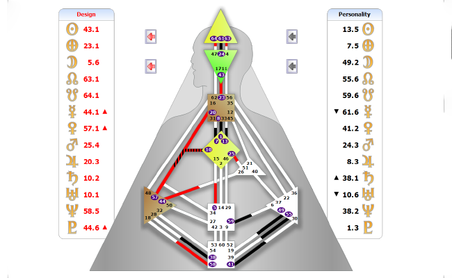
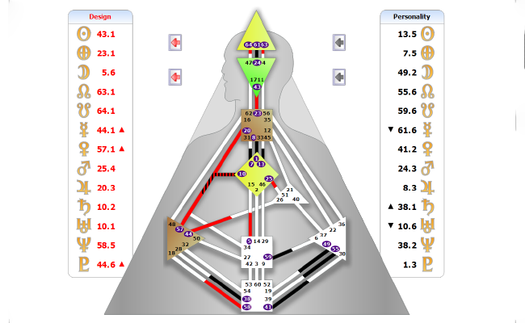

נעים להכיר,
שמי ליאורה לוריא
עיצוב אנושי בשבילי הוא לא שיטה – זו דרך חיים.
זו שפה שמצאתי בתוכה בית, אחרי שנים שבהן לא תמיד היה לי קל להבין למה אני מרגישה כל כך אחרת.
פרוג’קטור אינטואיטיבי עם פרופיל 5/1 ורק ערוצים אינדיבידואליים, החיים תמיד הרגישו כמו תדר מיוחד, לפעמים שקט מדי או עמוק מדי לעולם סביבי. כשהגעתי לעיצוב האנושי – משהו בי נרגע. פתאום היה הסבר. הייתה לגיטימציה. והייתה נחיתה רכה לתוך עצמי.
העולם הפנימי תמיד היה המרכז שלי. עבדתי במשך שנים בתחום בריאות הנפש והטיפול, ותמיד משכה אותי הדרך שמובילה פנימה – אל המקומות השקטים, שבהם נולדת תנועה אמיתית.
אני כאן בשביל אנשים שמרגישים שהגיע הזמן לשינוי.
לא שינוי חיצוני, אלא שינוי שמתחיל בהקשבה.
אני יודעת שלפעמים מילה אחת, תובנה אחת, מבט מדויק – יכולים לפתוח את הלב.
וזה מה שאני הכי אוהבת – הרגע שבו מישהו פתאום נזכר במי שהוא.
למדתי בחו"ל, בבית הספר הבינלאומי IHDS, לצד כמה מהמורים הוותיקים והעמוקים בתחום. אני ממשיכה כל הזמן ללמוד, להתפתח ולחקור – לא רק בשביל הידע, אלא כדי להעמיק את היכולת להקשיב, לדייק, ולהחזיק מרחב שמזמין אמת.
# אני מציעה את שירותי בשפות עברית ורוסית
 
